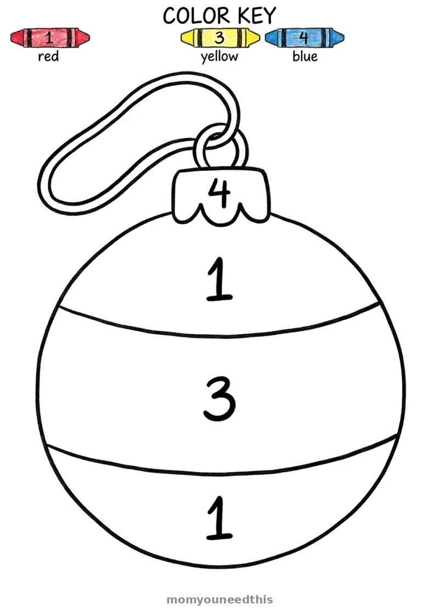

Christmas Ornament Paint by Numbers Free Color-by-Number Printable, Ages 3+
Quick Answer
This free christmas ornament paint by numbers printable is made for ages 3 and up: big numbered sections, large clear numbers, and just 3 colors on the shared color key — the fewest of any sheet in the set, which makes this the best first paint-by-numbers page we offer. The finished picture is a round Christmas ornament with red bands, a yellow middle, and a blue cap. Its key uses only the numbers 1, 3 and 4 — a short key for a short, confidence-building job.
At a Glance
- Activity: Christmas Ornament Paint by Numbers
- Ages: 3+
- Colors: 3 (1 = Red, 3 = Yellow, 4 = Blue)
- Sections: Extra-large, numbered
- Supplies: Printed sheet + crayons
- Time: ~15 min

🎨 Color Key for This Sheet
This sheet uses 3 colors from the shared key. The numbers mean the same thing on every sheet — 1 is always red, 2 is always green, and so on.
| Number | Color | What it colors |
|---|---|---|
| 1 | Red | top and bottom bands |
| 3 | Yellow | middle band |
| 4 | Blue | cap |
This sheet uses only 3 colors — no green, no orange. The hanging string stays unnumbered.
🖍️ How to Color This Sheet
- Set out the crayons. Only the 3 colors this sheet uses — red, yellow and blue. Three crayons is the whole toolbox: the fastest start of any sheet here.
- Point at the key together. “3 is yellow” — find the ornament's wide middle band and hold the yellow crayon over it. One demo section teaches the whole game.
- Let them work in any order. Bands first, cap last, or the other way around — with only a handful of sections, both are correct and both are quick. The rule is just: number matches color.
- Say the numbers and colors out loud. “That's a 4 — blue, the cap!” turns each section into a tiny number-and-color quiz.
🧠 What Kids Learn From This Christmas Ornament Sheet
This sheet teaches the core loop — find the number, match it to the key, fill the section — with the training wheels fully on. Three colors and a handful of large sections mean a three-year-old can hold the whole system in mind at once: the key, the numbers, and the picture. That is not a lesser version of the skill; it is the skill, learned at the size a beginner can succeed at.
The ornament's bands teach one more thing: pattern. Red, yellow, red — the stripes repeat, and children who notice the repetition start predicting which color comes next before they check the key. Prediction is the first step from following a key to reading one, and this round, simple picture is where it happens.
Because the sheet finishes fast, it also teaches completion — the full arc from blank page to finished picture in one short sitting. For a first paint-by-numbers experience, finishing matters more than difficulty.
🎨 Make It Your Own
The color key is a starting point, not a rule. Once your child has colored the ornament the “right” way — red bands, yellow middle, blue cap — print another copy and let them design their own bauble: all-blue, rainbow-banded, or patterned with dots and zigzags in the bands. Real ornaments come in every color scheme there is, so a wild one still looks like it belongs on a tree.
The finished ornaments are genuinely usable: color two or three copies, cut them out, and hang them on a paper tree, a window, or the real tree's lower branches where small hands can reach their own work.
🖍️ More Paint by Numbers Sheets
Try another sheet — same color key, new picture.
👨👩👧 A Quiet Activity That Actually Works
Some activities earn their keep by being short. This ornament is the sheet to pull out when there are ten quiet minutes to fill — before dinner, between bath and bed, in the car with a clipboard — and a longer project would end unfinished and frustrating. Three crayons, a few big sections, a complete picture: done, and done properly.
In December it multiplies beautifully. A string of these ornaments, colored across several evenings and cut out, becomes a garland a preschooler made entirely themselves — the rare holiday craft where the child's part is the whole thing.
❓ Christmas Ornament Paint by Numbers FAQs
How does the christmas ornament paint by numbers sheet work?
Each section of the ornament picture has a number. Match the number to the color key (1 = Red, 3 = Yellow, 4 = Blue), pick up that crayon, and color the section. The bands are red (1), the wide middle is yellow (3), and the cap is blue (4). This sheet's key has only three numbers — 1, 3 and 4 — because the picture needs only three colors.
What age can kids do this christmas ornament paint by numbers sheet?
Ages 3 and up — and the best starting sheet in the set for a first-timer. It uses only 3 colors and a few extra-large sections, so even young preschoolers can finish the whole picture in one sitting and feel the win.
Is this christmas ornament paint by numbers printable free?
Yes — completely free, no signup or email required. Download the PDF, print it, and color it as many times as you like. Cut-out ornaments make an easy homemade garland.
📚 Keep Exploring
- 🎨 All Paint by Numbers Sheets 8 free color-by-number printables for kids.
- ✏️ Drawing Tutorials 76 free step-by-step drawing tutorials for kids.
- 🎁 Free Resources Free printables and resources for busy moms.